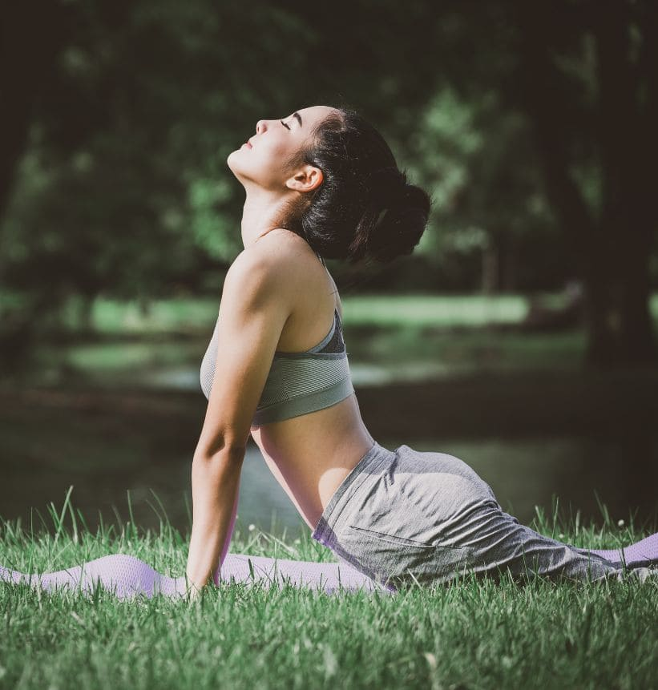
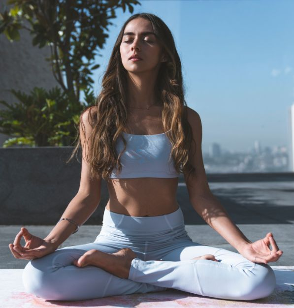
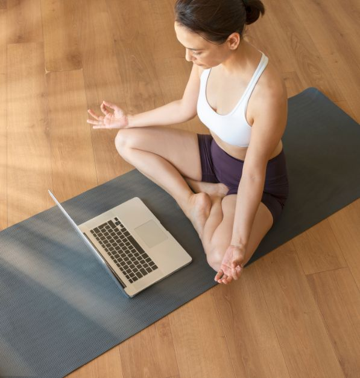
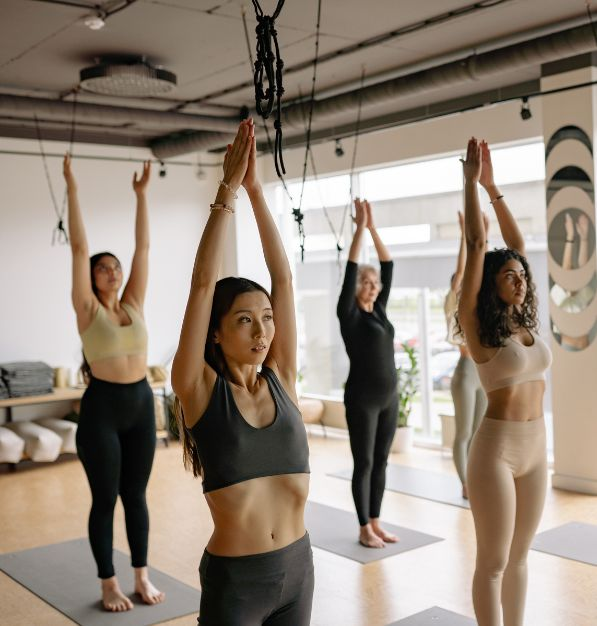

アシュタンガヨガとは？
About ashtanga yoga呼吸と動きをシンクロさせ、心身を浄化する伝統的なヨガです。
アシュタンガヨガは、呼吸とポーズを連動させながら、決められた順番で流れるように行うダイナミックなヨガスタイルです。
ポーズだけでなく、呼吸法や視線にも独自のルールがあり、集中力を高め、深い瞑想へと導きます。

アシュタンガヨガの特徴
ashtanga yoga
シークエンス制: 決まった順番でポーズを行うため、初心者から上級者まで自分のレベルに合わせて練習できます。
ヴィンヤサ: 呼吸に合わせてポーズを繋いでいくことで、体全体を温め、柔軟性を高めます。
ウジャイ呼吸: 鼻から力強く息を吐き、集中力を高める呼吸法が特徴です。
体力向上: 全身を使うポーズが多く、心肺機能の向上や体幹の強化が期待できます。
精神的な成長: 呼吸と動きに集中することで、ストレスを軽減し、心の安定をもたらします。

こんな人におすすめ
Recommend◆体力向上を目指したい方
◆集中力を高めたい方
◆柔軟性を高めたい方
◆伝統的なヨガに興味がある方

始めたい方へ
Let's get startedアシュタンガヨガは、ポーズだけでなく呼吸や視線にも意識を集中させるため、初心者の方には少し難易度が高く感じるかもしれません。
しかし、経験豊富なインストラクターの指導のもと、自分のペースで練習することで、必ず効果を実感できるでしょう。